Routing Loop Issue
Problem Description
Issue Overview:
Routing loops occur when network packets continuously circle between routers without reaching their intended destination. This Layer 3 issue severely impacts network performance, causing packet loss and increased latency.
Common Symptoms:
- Packets never reach their destination
- High latency and packet loss
- TTL expired messages in traceroute
- Increased router CPU utilization
- Network congestion and performance degradation
Root Causes:
- Misconfigured static routes
- Conflicting routing protocol configurations
- Incorrect route summarization
- Route redistribution issues
- Network topology changes without proper route updates
Network Setup
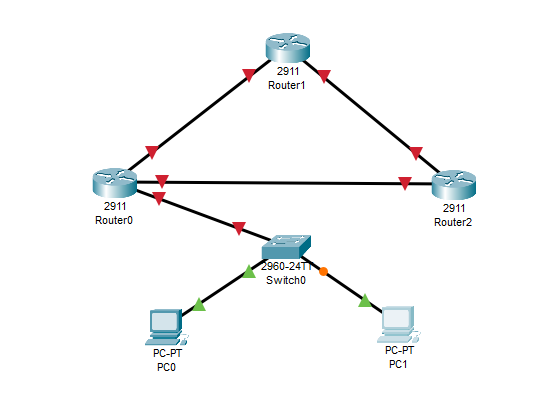
Network Components:
- 3x Cisco 2911 Routers
- 1x Cisco 2960 Switch
- 2x End devices (PC0 and PC1)
- IP addressing scheme using 10.0.0.0/30 and 192.168.1.0/24 networks
Initial Configuration
Router0 Configuration
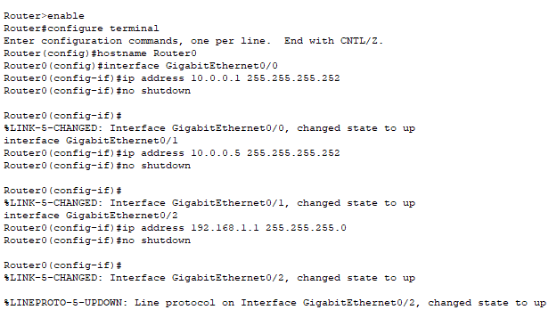Basic IP configuration of Router0 interfaces:
- GigabitEthernet0/0: 10.0.0.1/30
- GigabitEthernet0/1: 10.0.0.5/30
- GigabitEthernet0/2: 192.168.1.1/24
Router1 Configuration
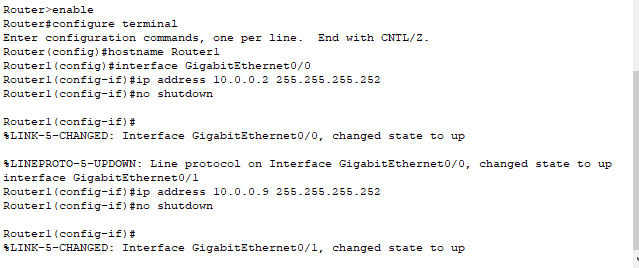Basic IP configuration of Router1 interfaces:
- GigabitEthernet0/0: 10.0.0.2/30
- GigabitEthernet0/1: 10.0.0.9/30
Router2 Configuration
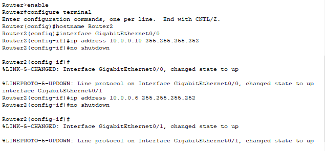Basic IP configuration of Router2 interfaces:
- GigabitEthernet0/0: 10.0.0.10/30
- GigabitEthernet0/1: 10.0.0.6/30
End Device Configuration
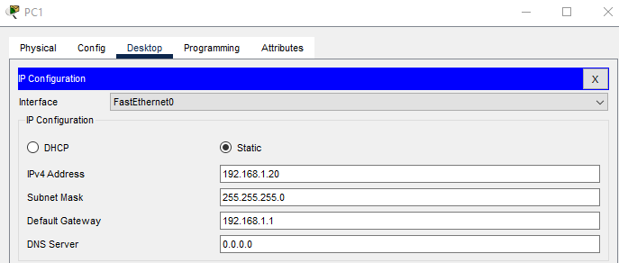PC configurations:
- PC0: 192.168.1.10/24, Gateway: 192.168.1.1
- PC1: 192.168.1.20/24, Gateway: 192.168.1.1
Problem Creation and Demonstration
Problematic Static Routes
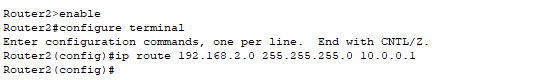Creating routing loop with static routes:
Router0(config)#ip route 192.168.2.0 255.255.255.0 10.0.0.2
Router1(config)#ip route 192.168.2.0 255.255.255.0 10.0.0.10
Router2(config)#ip route 192.168.2.0 255.255.255.0 10.0.0.1Loop Verification
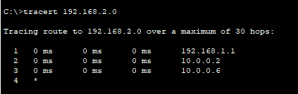Traceroute output showing the routing loop:
- Hop 1: 192.168.1.1 (Router0)
- Hop 2: 10.0.0.2 (Router1)
- Hop 3: 10.0.0.6 (Router2)
- Hop 4: * (Timeout - Loop continues)
Solution Implementation
OSPF Configuration
Router0 OSPF
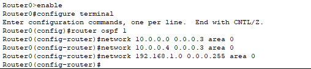Router1 OSPF
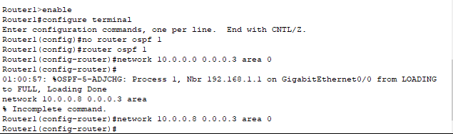Router2 OSPF
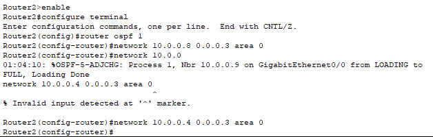Solution Verification
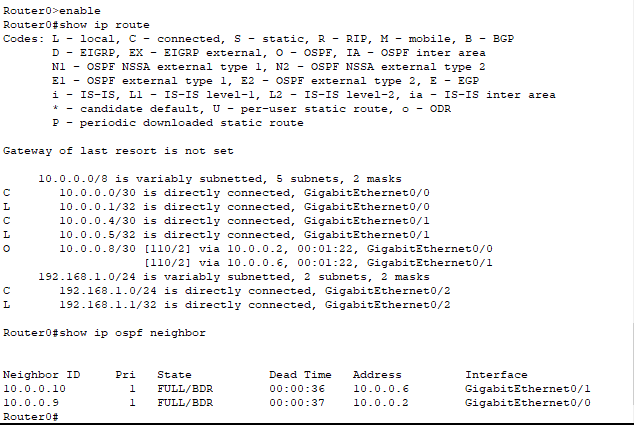Verification shows:
- OSPF neighbors established
- Correct routes in routing table
- No routing loops present
Troubleshooting Guide
Verification Commands:
show ip route- Display routing tableshow ip ospf neighbor- Verify OSPF relationshipstraceroute- Test packet pathshow ip protocols- Verify routing protocols
Packet Tracer Simulation
Download the complete Packet Tracer simulation file to practice this configuration:
Download Simulation File